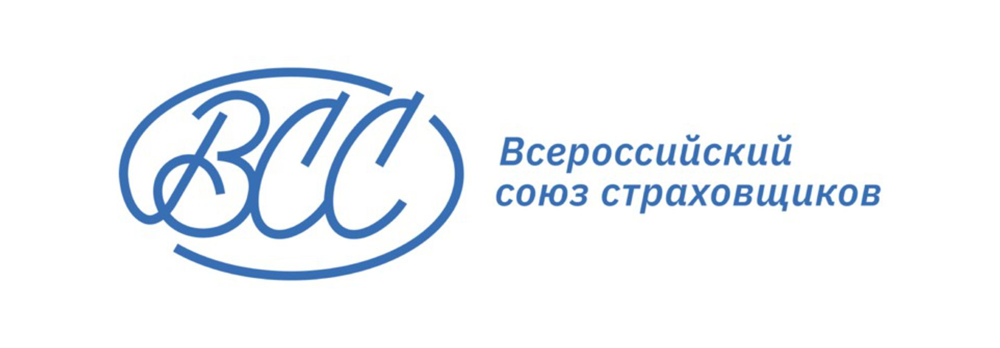
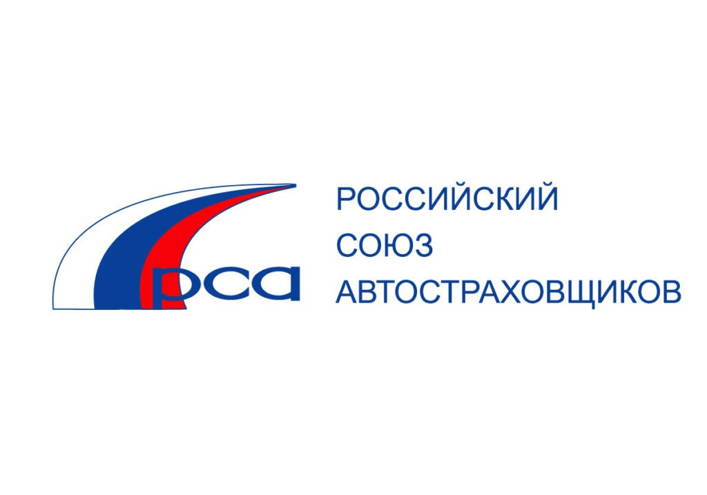
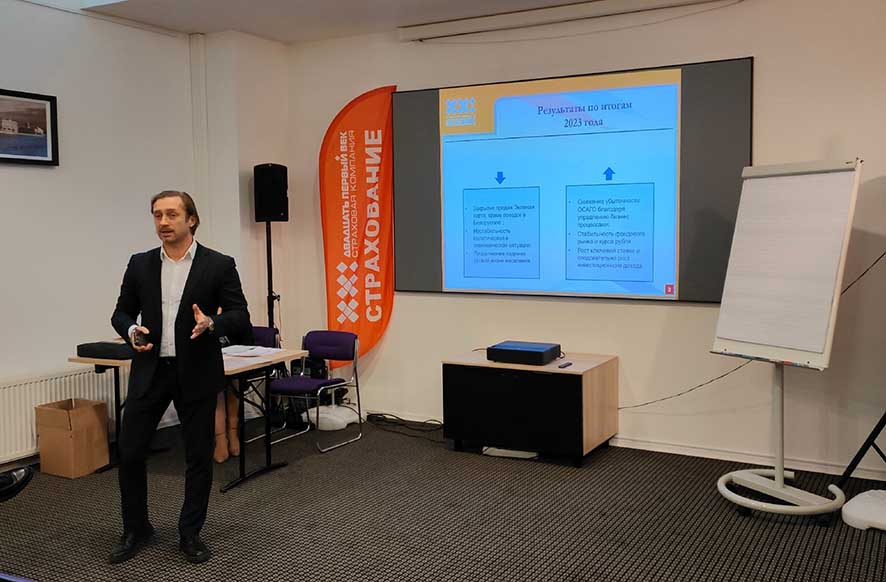
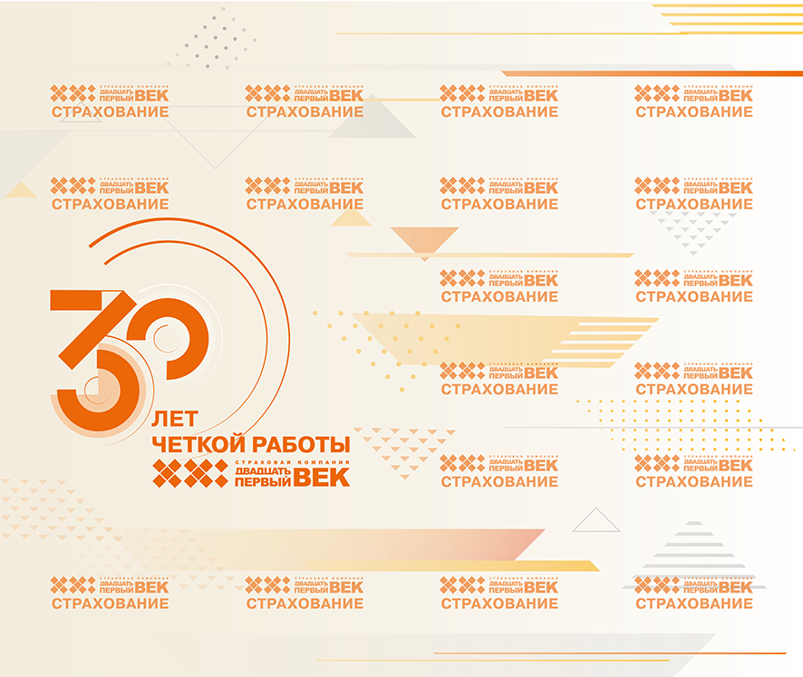

.png)
- Страхование средств железнодорожного транспорта;
- Страхование средств воздушного транспорта;
- Страхование средств водного транспорта;
- Страхование грузов;
- Сельскохозяйственное страхование (страхование урожая, сельскохозяйственных культур, многолетних насаждений, животных);
- Страхование имущества юридических лиц, за исключением транспортных средств и сельскохозяйственного страхования;
- Cтрахование имущества граждан, за исключением транспортных средств;
- Cтрахование гражданской ответственности владельцев автотранспортных средств;
- Cтрахование гражданской ответственности владельцев средств воздушного транспорта;
- Cтрахование гражданской ответственности владельцев средств водного транспорта;
- Cтрахование гражданской ответственности владельцев средств железнодорожного транспорта;
- Cтрахование гражданской ответственности за причинение вреда вследствие недостатков товаров, работ, услуг;
- Cтрахование гражданской ответственности за причинение вреда третьим лицам;
- Cтрахование гражданской ответственности за неисполнение обязательств по договору;
- Cтрахование предпринимательских рисков;
- Cтрахование финансовых рисков.
Направление деятельности и год создания
АО СК «Двадцать первый век» - универсальная страховая компания, которая успешно работает на российском и международном рынке с 1994 года. Уставный капитал составляет 302 761 870 рублей, деятельность осуществляется в соответствии с лицензиями без ограничения срока действия СЛ № 2027, ОС № 2027-03 и СИ № 2027 ЦБ РФ от 17 мая 2022 года. Регистрационный номер в едином государственном реестре субъектов страхового дела - 2027.
Компания работает с частными клиентами и представители бизнеса, для каждого из которых специалистами разработаны оптимальные страховые продукты. Последние несколько лет активно развиваются розничные продажи полисов автострахования, страхования от несчастных случаев и страхования имущества. Компания осуществляет страхование по всей стране, в Санкт-Петербурге, Москве, и прочих регионах Российской Федерации – Ленинградской, Калининградской, Московской, Белгородской, Ростовской, Мурманской и других.
Финансовая устойчивость Страховой компании «Двадцать первый век» гарантируется заключением облигаторных договоров перестрахования. Основными партнерами по перестрахованию по всем видам страховых договоров являются АО «Русское перестраховочное общество» и АО РНПК.
Компания использует прозрачные, юридически надежные инструменты для размещения временно свободных средств страховых резервов, формируя сбалансированную структуру инвестиционного портфеля.
АО СК «Двадцать первый век» является членом Всероссийского Союза Страховщиков (Свидетельство о вступлении в Союз от 06.12.16 г.), Российского Союза Автостраховщиков и Российского Бюро «Зеленая карта», Союза Страховщиков Санкт-Петербурга и Северо-Запада и принимает активное участие в их деятельности, направленной на развитие страхового дела в Российской Федерации. «Двадцать первый век» входит в Ассоциацию банков России, работая под расширением и развитием взаимовыгодных связей в финансовом секторе. (Свидетельство о вступлении в Ассоциацию от 27.09.23 г.)


Логотип
Зарегистрированный знак обслуживания (Свидетельство № 563086)
Виды страховых услуг
- Обязательное страхование гражданской ответственности владельцев транспортных средств;
- Страхование от несчастных случаев и болезней;
- Медицинское страхование;
- Страхование средств наземного транспорта (за исключением средств железнодорожного транспорта);
История развития
1994 год
Основанная в 1994 году компания представляла собой небольшой бизнес. К 2001 году уставный капитал «Двадцать первого века» составлял 7,5 млн.
2003-2006 годы
Стратегия развития компании на следующие годы была заложена в 2003 году, когда в «Двадцать первый век» пришел новый менеджмент и произошла смена акционеров. В последующие годы произошло много значимых событий. Активно развивалось страхование юридических лиц и уставный капитал увеличился до 90 млн. Основным продуктом-драйвером для частных клиентов стал полис «Зеленая карта», международный сертификат обязательного страхования гражданской ответственности владельцев транспортных средств. Близкое расположение Санкт-Петербурга к границе давало хороший потенциал развития для этого направления бизнеса. Было открыто первое обособленное подразделение в Выборге и пункты продаж вблизи русско-финляндской границы.
В следующие годы АО СК «Двадцать первый век» качественно растет с точки зрения финансовых показателей и расширения перечня предоставляемых страховых услуг. В 2004 году вводится первая система автоматизированного учета InsCom. Менеджмент «Двадцать первого века» активно участвует в становлении российского страхового рынка, компания становится членом ВСС (Всероссийского Союза Страховщиков), вступает в Комитет РСА по международным отношениям и сотрудничеству с системами ОСАГО.
2007-2017 годы
В 2007 году компания переезжает в собственное современное здание на Литейном проспекте в Санкт-Петербурге, уставный капитал к этому моменту составляет уже 204 млн. руб. Следующие десятилетие характеризуется расширением географии присутствия АО СК «Двадцать первый век» в регионах России. Открываются новые филиалы и подразделения – в Москве, Пскове, Ивангороде, далее – в южных регионах. Появляется больше пунктов продаж на границах Российской Федерации, предлагающих страхование граждан, выезжающих за рубеж. В Санкт-Петербурге это период характеризуется развитием розничных продаж и открытием офисов компании в популярных локациях и торговых центрах города.
К 2017 году появляется первый онлайн продукт – электронное ОСАГО. В этом же году на сайте компании начитают оформляться полисы страхования от несчастных случаев спортсменов и страхования граждан, выезжающих за рубеж.
2018 - 2023 годы
По итогам 2018 года Страховая компания «Двадцать первый век» впервые преодолела рубеж сборов страховых премий в 1 млрд. руб. Устойчивые деловые связи, опыт, наработанная к 2020 году агентская сеть и появление сегмента онлайн продаж помогли компании выдержать сложный период ковидных ограничений 2020 года.
В конце 2022 г. Страховая компания «Двадцать первый век» вошла в состав многопрофильного холдинга Finbridge и стала частью экосистемы финансовых сервисов группы, улучшая существующие страховые продукты и начав работу в новых перспективных проектах в рамках общей стратегии цифровизации. По итогам 2022 года сумма сборов страховых премий впервые превысила 2 млрд. руб., рост продолжился и в следующем году. Уставный капитал был увеличен до 302, 8 млн. рублей.

«Двадцать первый век» сегодня и в будущем
Страховая компания «Двадцать первый век» вышла на новый виток развития. Сейчас компания — это более 250 квалифицированных сотрудников, 2,5 млрд. страховых сборов по итогам 2023 года и более 44 обособленных отделений по всей стране.

На ближайший период запланированы: существенный рост страховых сборов, дальнейшее укрепление позиций в розничном и корпоративном страховании, развитие новых каналов продаж, расширение географии присутствия и агентской сети. В качестве основных акцентов ближайшего года топ-менеджмент выделяет цифровизацию и расширение перечня страховых услуг.